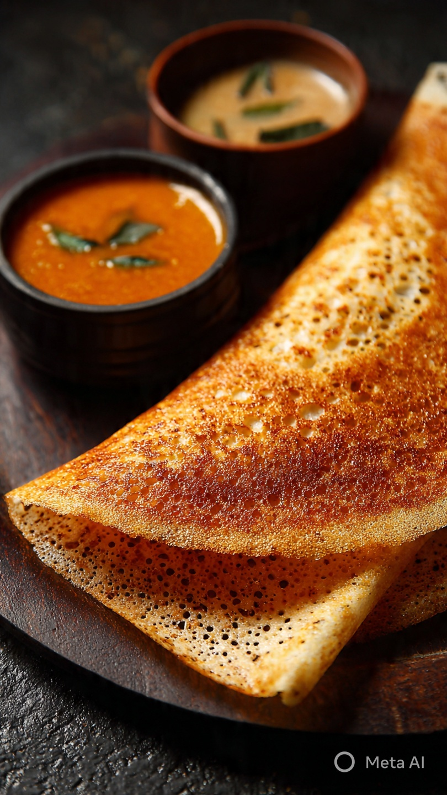
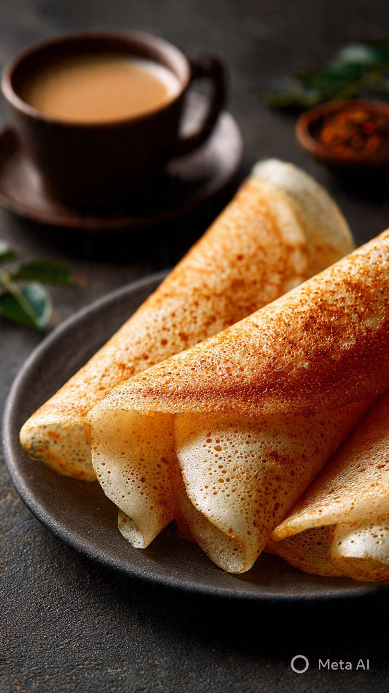
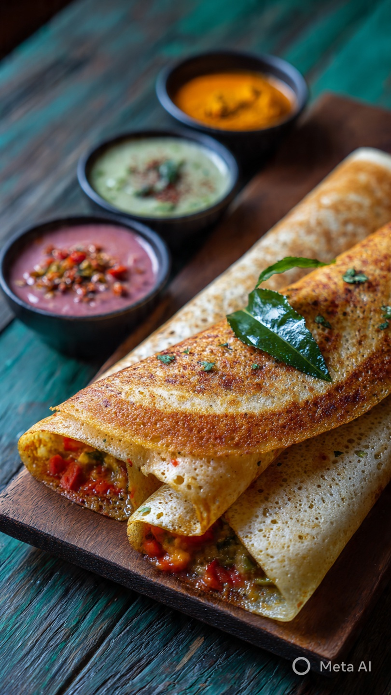

పెసరట్టు (Pesarattu) అనేది తెలుగువారికి ప్రసిద్ధి చెందిన, ఆరోగ్యవంతమైన బ్రేక్ఫాస్ట్ వంటకం. ఇది పచ్చి మినపప్పు (Green gram / Moong dal) మరియు కొద్దిగా బియ్యం కలిపి తయారు చేయబడిన పాన్కేక్స్ లాంటిదే ఉంటుంది. ఈ వంటకం పులిహోర, ఉప్పు పప్పుల కంటే తక్కువ కేలరీలు కలిగి ఉంటుంది, అలాగే ప్రోటీన్ లో అధికంగా ఉంటుంది. పేసరట్టు ను సులభంగా తయారు చేయవచ్చు, మరియు ఇది చిన్న పిల్లల నుండీ పెద్దవాళ్ల వరకు అందరికి నచ్చే వంటకం.

పెసరట్టు తయారీకి కావలసిన పదార్థాలు
- పచ్చి మినపప్పు (Green gram / Moong dal) – 1 కప్పు
- బియ్యం (Rice) – 2 చెంచాలు
- అల్లం (Ginger) – 1 టీస్పూన్
- పచ్చి మిర్చి (Green chili) – 2-3
- ఉప్పు – రుచి మేరకు
- నూనె – వేపడానికి
తయారీ విధానం
1. మొదట, పచ్చి మినపప్పు మరియు బియ్యాన్ని 4-5 గంటలు నీటిలో నానబెట్టాలి. ఇది పేస్ట్ మెత్తగా తయారవ్వడానికి అవసరం.
2. నానబెట్టిన మినపప్పు, బియ్యం, అల్లం, పచ్చి మిర్చి మరియు ఉప్పు ను మిక్సీ లో వేసి బాగా మెత్తగా పేస్ట్ చేయండి.
3. ఫ్రై ప్యాన్ ను వేడి చేసి కొంచెం నూనె వేసి, పేస్ట్ ను చాపి పాన్కేక్స్ లా వేపండి. రెండు వైపులా బంగారం రంగులో మారేవరకు వేపడం ముఖ్యం.

సర్వ్ చేయడం
వేడి వేడి పెసరట్టు ను పచ్చి చట్ని, కొబ్బరి చట్ని, లేదా మిరియాలతో వాడే తీయని చట్ని తో సర్వ్ చేయండి. ఇది ఉదయం బ్రేక్ ఫాస్ట్, మధ్యాహ్నం లైట్ మిల్ లేదా రాత్రి స్నాక్ కోసం అద్భుతంగా ఉంటుంది.
పేసరట్టు చరిత్ర
పేసరట్టు యొక్క మూలం తెలుగువారిలో చాలా పాతది. రూరల్ తెలుగు ప్రాంతాల్లో, పెసరట్టు ను సాధారణంగా **ఉపాహారం** కోసం తయారు చేస్తారు. ఇది ప్రత్యేకంగా ఆరోగ్యానికి మేలు చేసే విధంగా ప్రోటీన్ మరియు ఫైబర్ తో నిండి ఉంటుంది. గ్రీన్ గ్రామ్ ను రాత్రి నానబెట్టి, ఉదయానికి వేగంగా తయారు చేయడం సాధారణం.

పేసరట్టు వైవిధ్యాలు
పేసరట్టు కు అనేక రకాల వేరియేషన్స్ ఉన్నాయి:
- అల్లం-మిర్చి పెసరట్టు: పచ్చి మిర్చి మరియు అల్లం ఎక్కువగా వేసి తినకరంగా తయారు చేయబడుతుంది.
- ఉల్లిపాయ పెసరట్టు: పేసర్ పేస్ట్ పై ఉల్లిపాయ ముక్కలు చీల్చి వేయడం వలన రుచికరంగా ఉంటుంది.
- వెజిటబుల్ పెసరట్టు: grated carrots, capsicum, beans, మరియు కొత్తిమీర కలిపి వేపితే colorful మరియు nutritious pancakes లా మారుతుంది.
పోషకాల సమాచారం
పెసరట్టు అనేది low-calorie, high-protein, rich-fiber డైట్ కి అద్భుతమైన వంటకం. గ్రీన్ గ్రామ్ లో vitamins A, B, C, మరియు minerals (Iron, Magnesium) చాలా ఉన్నాయి. ఇది శక్తివంతమైన మరియు ఆరోగ్యానికి మేలు చేసే బ్రేక్ఫాస్ట్ ఎంపిక.

అడ్వాన్స్డ్ టిప్స్
- పేసర్ పేస్ట్ ను ఎక్కువ జ్యూస్ గా ఉంచకూడదు, లేత పేస్టు లోను బాగా పాన్ లో విస్తరించవచ్చు.
- వెన్న, నెయ్యి, లేదా సన్నగా నూనె వేసి వేపితే రుచి మరింత పెరుగుతుంది.
- వీటిని పక్కన కూరగాయల సూప్ లేదా చట్ని తో సర్వ్ చేయండి, complete meal అవుతుంది.
ముగింపు
తెలుగు వంటలలో పెసరట్టు అనేది ఒక క్లాసిక్, ఆరోగ్యవంతమైన, మరియు రుచికరమైన బ్రేక్ఫాస్ట్. దీన్ని నేర్చుకోవడం చాలా సులభం మరియు దీని వైవిధ్యాలు అనేకం. మీరు ఇక్కడ ఇచ్చిన రేసిపీని అనుసరించి, ప్రతి రోజూ కొత్త రుచితో ఈ వంటకం ప్రయత్నించవచ్చు. తెలుగులో మీ కుటుంబానికి, స్నేహితులకు ప్రత్యేకంగా వంటచేయండి మరియు సంప్రదాయ రుచులను మీ టేబుల్ పై నిలుపుకోండి.